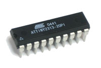
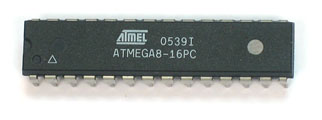
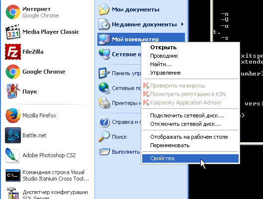
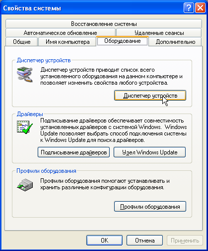
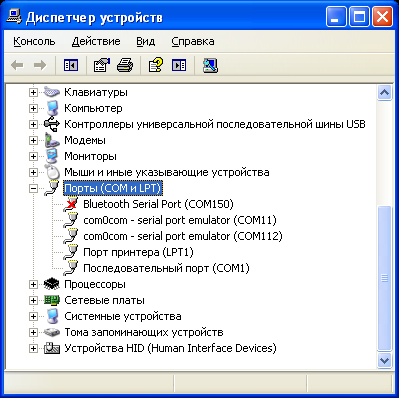
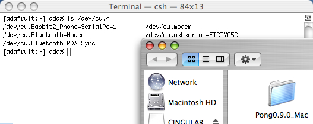

Опций довольно много. Не пытайтесь их все запомнить, нужно просто иметь общее представление о том, что эти опции могут делать.
-p partno: эта опция просто говорит утилите, какой микроконтроллер AVR будет программироваться. Например, если Вы собрались программировать ATtiny2313, то в качестве partno введите attiny2313.
-b baudrate: эта опция используется для настройки скорости последовательной передачи данных (через RS-232, UART) для программаторов, работающих по протоколам наподобие STK200 или STK500 STK500. Часто эту опцию использовать необязательно, потому что подходит скорость, настроенная по умолчанию.
-B bitrate: эта опция меняет скорость следования бит, на которой программатор общается с программируемым чипом. Если Ваш микроконтроллер тактируется очень низкой частотой, то потребуется снизить скорость данных программирования. Обычно микроконтроллер работает на высокой частоте (8 МГц и выше, особенно если используется кварцевый резонатор), так что эта опция применяется редко.
-C config-file: это файл конфигурации, который говорит avrdude о различных способах, как ему общаться с программатором. Имеется файл конфигурации по умолчанию, который используется без указания -C опции, так что эта опция обычно не нужна.
Если путь до файла имеет пробелы, то его следует брать в двойные кавычки. Например: -C"C:\Program Files\Arduino1.0.6\hardware\tools\avr\etc\avrdude.conf".
-c programmer: эта опция задает тип программатора (его протокол). Например, если используете STK500, то укажите stk500, если используете программатор DT006, то укажите dt006, и т. д.
-D: опция запрещает очистку памяти чипа перед программированием. Скорее всего, эта опция Вам никогда не потребуется.
-P port: опция задает порт обмена данными между компьютером и программатором. Это может быть COM1, LPT1 или USB.
-F: опция отменяет проверку сигнатуры, которая позволяет убедиться, что программируемый чип именно тот, который нужен. Настоятельно рекомендуется выполнять эту проверку для тестирования соединения, поэтому не используйте эту опцию.
-e: опция очистки памяти чипа. Обычно её использовать не нужно, потому что очистка FLASH выполняется автоматически перед программированием.
-U memtype:r|w|v:filename[:format]: а вот эта команда уже по-настоящему важна. Именно одна задает, какое именно программирование будет произведено. Здесь memtype может быть flash или eeprom для памяти, либо hfuse, lfuse или efuse для конфигурационных фьюзов чипа. Буквы r|w|v обозначают операцию над памятью, т. е. r (read, чтение), w (write, запись) или v (verify, проверка памяти). Часть команды filename задает имя файла, который будет прочитан или записан во время выполнения команды. [:format] задает опцию формата файла. Чаще всего используется формат Intel Hex [7], и файл данных обычно получает расширение *.hex". Если Вы хотите записать, например, файл test.hex в память flash, то должны использовать -U flash:w:test.hex:i. Если хотите прочитать память eeprom в файл "eedump.hex", то должны использовать команду -U eeprom:r:eedump.hex:i.
Если путь до файла имеет пробелы, то его следует брать в двойные кавычки.
-n: это означает, что никаких действий записи производиться не будет. Команда полезна, когда Вы хотите гарантировать, что ни одна из отправляемых команд не повредит содержимое памяти чипа. Это разновидность 'блокировки безопасности'.
-V: выключает автоматическую проверку содержимого памяти при записи. Не советую использовать эту опцию, потому что проверка дает дополнительную уверенность, что память записана правильно.
-u: запрет режима безопасности. Это установка по умолчанию, когда avrdude запускается из скрипта. Если хотите модифицировать биты фьюзов, то используйте эту опцию, чтобы явно подтвердить свои намерения (подавляет дополнительный запрос подтверждения).
-t: запускает режим терминала, когда Вы вводите команды строка за строкой. Не используйте этот режим, поскольку это добавляет сложности.
-E: выводит некоторые спецификации программатора, не используйте эту опцию.
-v: опция включает подробный вывод сообщений. Это может потребоваться для диагностики, чтобы получить дополнительную информацию. Обычно эта опция не нужна.
-q: действие этой опции дает противоположный эффект по сравнению с опцией -v, т. е. количество выводимой информации уменьшается. Обычно эта опция также не используется.
В этом списке красным цветом выделены те опции, которые скорее всего Вам понадобятся. Давайте рассмотрим подробнее использование этих опций.
[-c programmer]
Чтобы получить список поддерживаемых программаторов (и найти тот, который у Вас), введите команду avrdude -c qwerty (здесь qwerty это произвольный набор символов, который не соответствует ни одному из поддерживаемых программаторов). Как результат выполнения команды будет выведен список поддерживаемых программаторов.
Список программаторов, поддерживаемых avrdude
avrdude: Can't find programmer id "qwerty"
Valid programmers are:
c2n232i = serial port banging, reset=dtr sck=!rts mosi=!txd miso=!cts
dasa3 = serial port banging, reset=!dtr sck=rts mosi=txd miso=cts
dasa = serial port banging, reset=rts sck=dtr mosi=txd miso=cts
siprog = Lancos SI-Prog (http://www.lancos.com/siprogsch.html)
ponyser = design ponyprog serial, reset=!txd sck=rts mosi=dtr miso=cts
89isp = Atmel at89isp cable [c:\WinAVR\bin\avrdude.conf:791]
frank-stk200 = Frank STK200 [c:\WinAVR\bin\avrdude.conf:777]
blaster = Altera ByteBlaster [c:\WinAVR\bin\avrdude.conf:764]
ere-isp-avr = ERE ISP-AVR (http://www.ere.co.th/download/sch050713.pdf)
atisp = AT-ISP V1.1 cable for AVR-SDK1 (http://micro-research.co.th/)
dapa = Direct AVR Parallel Access cable [c:\WinAVR\bin\avrdude.conf:733]
xil = Xilinx JTAG cable [c:\WinAVR\bin\avrdude.conf:720]
futurlec = Futurlec.com programming cable. [c:\WinAVR\bin\avrdude.conf:703]
abcmini = ABCmini Board, aka Dick Smith HOTCHIP [c:\WinAVR\bin\avrdude.conf:693]
picoweb = Picoweb Programming Cable (http://www.picoweb.net/)
sp12 = Steve Bolt's Programmer
alf = Nightshade ALF-PgmAVR (http://nightshade.homeip.net/)
bascom = Bascom SAMPLE programming cable
dt006 = Dontronics DT006
pony-stk200 = Pony Prog STK200
stk200 = STK200 [c:\WinAVR\bin\avrdude.conf:608]
bsd = Brian Dean's Programmer, http://www.bsdhome.com/avrdude/
pavr = Jason Kyle's pAVR Serial Programmer
dragon_pdi = Atmel AVR Dragon in PDI mode
dragon_dw = Atmel AVR Dragon in debugWire mode
dragon_hvsp = Atmel AVR Dragon in HVSP mode
dragon_pp = Atmel AVR Dragon in PP mode
dragon_isp = Atmel AVR Dragon in ISP mode
dragon_jtag = Atmel AVR Dragon in JTAG mode
jtag2pdi = Atmel JTAG ICE mkII PDI mode
jtag2avr32 = Atmel JTAG ICE mkII in AVR32 mode
jtagmkII_avr32 = Atmel JTAG ICE mkII in AVR32 mode
jtag2dw = Atmel JTAG ICE mkII in debugWire mode
jtag2isp = Atmel JTAG ICE mkII in ISP mode [c:\WinAVR\bin\avrdude.conf:502]
jtag2 = Atmel JTAG ICE mkII [c:\WinAVR\bin\avrdude.conf:494]
jtag2fast = Atmel JTAG ICE mkII [c:\WinAVR\bin\avrdude.conf:486]
jtag2slow = Atmel JTAG ICE mkII [c:\WinAVR\bin\avrdude.conf:478]
jtagmkII = Atmel JTAG ICE mkII [c:\WinAVR\bin\avrdude.conf:470]
jtag1slow = Atmel JTAG ICE (mkI) [c:\WinAVR\bin\avrdude.conf:463]
jtag1 = Atmel JTAG ICE (mkI) [c:\WinAVR\bin\avrdude.conf:455]
jtagmkI = Atmel JTAG ICE (mkI) [c:\WinAVR\bin\avrdude.conf:447]
avr911 = Atmel AppNote AVR911 AVROSP [c:\WinAVR\bin\avrdude.conf:441]
avr109 = Atmel AppNote AVR109 Boot Loader [c:\WinAVR\bin\avrdude.conf:435]
butterfly = Atmel Butterfly Development Board [c:\WinAVR\bin\avrdude.conf:429]
usbtiny = USBtiny simple USB programmer (http://www.ladyada.net/make/usbtinyisp/)
usbasp = USBasp (http://www.fischl.de/usbasp/) [c:\WinAVR\bin\avrdude.conf:417]
avr910 = Atmel Low Cost Serial Programmer [c:\WinAVR\bin\avrdude.conf:411]
stk600hvsp = Atmel STK600 in high-voltage serial programming mode
stk600pp = Atmel STK600 in parallel programming mode
stk600 = Atmel STK600 [c:\WinAVR\bin\avrdude.conf:393]
stk500hvsp = Atmel STK500 V2 in high-voltage serial programming mode
stk500pp = Atmel STK500 V2 in parallel programming mode
stk500v2 = Atmel STK500 Version 2.x firmware
mib510 = Crossbow MIB510 programming board
stk500v1 = Atmel STK500 Version 1.x firmware
stk500 = Atmel STK500 [c:\WinAVR\bin\avrdude.conf:357]
buspirate = The Bus Pirate [c:\WinAVR\bin\avrdude.conf:347]
avrisp2 = Atmel AVR ISP mkII [c:\WinAVR\bin\avrdude.conf:341]
avrispmkII = Atmel AVR ISP mkII [c:\WinAVR\bin\avrdude.conf:335]
avrispv2 = Atmel AVR ISP V2 [c:\WinAVR\bin\avrdude.conf:329]
avrisp = Atmel AVR ISP [c:\WinAVR\bin\avrdude.conf:323]
arduino = Arduino [c:\WinAVR\bin\avrdude.conf:317]
Найдите в этом списке имя, соответствующее Вашему используемому программатору. Это имя следует подставлять в опцию -c programmer.
[-p partno]
Чтобы получить список программируемых микроконтроллеров AVR, введите команду avrdude -c avrisp (при этом не имеет значения, используете ли Вы реально программатор avrisp) без указания имени микроконтроллера. Не следует запоминать этот длинный список, он используется только для того, чтобы узнать нужное имя для программируемого микроконтроллера, которое следует подставлять в командную строку вместе с опцией -p partno.
Список чипов AVR, поддерживаемых avrdude
avrdude: No AVR part has been specified, use "-p Part"
Valid parts are:
t10 = ATtiny10 [c:\WinAVR\bin\avrdude.conf:15443]
t8 = ATtiny9 [c:\WinAVR\bin\avrdude.conf:15403]
t5 = ATtiny5 [c:\WinAVR\bin\avrdude.conf:15363]
t4 = ATtiny4 [c:\WinAVR\bin\avrdude.conf:15323]
ucr2 = 32UC3A0512 [c:\WinAVR\bin\avrdude.conf:15302]
x128a4 = ATXMEGA128A4 [c:\WinAVR\bin\avrdude.conf:15204]
x64a4 = ATXMEGA64A4 [c:\WinAVR\bin\avrdude.conf:15107]
x32a4 = ATXMEGA32A4 [c:\WinAVR\bin\avrdude.conf:15010]
x16a4 = ATXMEGA16A4 [c:\WinAVR\bin\avrdude.conf:14913]
x256a3b = ATXMEGA256A3B [c:\WinAVR\bin\avrdude.conf:14816]
x256a3 = ATXMEGA256A3 [c:\WinAVR\bin\avrdude.conf:14719]
x192a3 = ATXMEGA192A3 [c:\WinAVR\bin\avrdude.conf:14622]
x128a3 = ATXMEGA128A3 [c:\WinAVR\bin\avrdude.conf:14525]
x64a3 = ATXMEGA64A3 [c:\WinAVR\bin\avrdude.conf:14428]
x256a1 = ATXMEGA256A1 [c:\WinAVR\bin\avrdude.conf:14331]
x192a1 = ATXMEGA192A1 [c:\WinAVR\bin\avrdude.conf:14234]
x128a1d = ATXMEGA128A1REVD [c:\WinAVR\bin\avrdude.conf:14137]
x128a1 = ATXMEGA128A1 [c:\WinAVR\bin\avrdude.conf:14040]
x64a1 = ATXMEGA64A1 [c:\WinAVR\bin\avrdude.conf:13943]
m6450 = ATMEGA6450 [c:\WinAVR\bin\avrdude.conf:13754]
m3250 = ATMEGA3250 [c:\WinAVR\bin\avrdude.conf:13565]
m645 = ATMEGA645 [c:\WinAVR\bin\avrdude.conf:13376]
m325 = ATMEGA325 [c:\WinAVR\bin\avrdude.conf:13187]
usb82 = AT90USB82 [c:\WinAVR\bin\avrdude.conf:13007]
usb162 = AT90USB162 [c:\WinAVR\bin\avrdude.conf:12823]
usb1287 = AT90USB1287 [c:\WinAVR\bin\avrdude.conf:12634]
usb1286 = AT90USB1286 [c:\WinAVR\bin\avrdude.conf:12445]
usb647 = AT90USB647 [c:\WinAVR\bin\avrdude.conf:12257]
usb646 = AT90USB646 [c:\WinAVR\bin\avrdude.conf:12068]
m32u4 = ATmega32U4 [c:\WinAVR\bin\avrdude.conf:11880]
t84 = ATtiny84 [c:\WinAVR\bin\avrdude.conf:11697]
t44 = ATtiny44 [c:\WinAVR\bin\avrdude.conf:11515]
t24 = ATtiny24 [c:\WinAVR\bin\avrdude.conf:11333]
m128rfa1 = ATMEGA128RFA1 [c:\WinAVR\bin\avrdude.conf:11145]
m2561 = ATMEGA2561 [c:\WinAVR\bin\avrdude.conf:10951]
m2560 = ATMEGA2560 [c:\WinAVR\bin\avrdude.conf:10758]
m1281 = ATMEGA1281 [c:\WinAVR\bin\avrdude.conf:10570]
m1280 = ATMEGA1280 [c:\WinAVR\bin\avrdude.conf:10381]
m640 = ATMEGA640 [c:\WinAVR\bin\avrdude.conf:10193]
t85 = ATtiny85 [c:\WinAVR\bin\avrdude.conf:10012]
t45 = ATtiny45 [c:\WinAVR\bin\avrdude.conf:9833]
t25 = ATtiny25 [c:\WinAVR\bin\avrdude.conf:9653]
pwm3b = AT90PWM3B [c:\WinAVR\bin\avrdude.conf:9472]
pwm2b = AT90PWM2B [c:\WinAVR\bin\avrdude.conf:9289]
pwm3 = AT90PWM3 [c:\WinAVR\bin\avrdude.conf:9106]
pwm2 = AT90PWM2 [c:\WinAVR\bin\avrdude.conf:8922]
t2313 = ATtiny2313 [c:\WinAVR\bin\avrdude.conf:8735]
m328p = ATMEGA328P [c:\WinAVR\bin\avrdude.conf:8547]
t88 = attiny88 [c:\WinAVR\bin\avrdude.conf:8361]
m168 = ATMEGA168 [c:\WinAVR\bin\avrdude.conf:8173]
m88 = ATMEGA88 [c:\WinAVR\bin\avrdude.conf:7987]
m48 = ATMEGA48 [c:\WinAVR\bin\avrdude.conf:7800]
t861 = ATTINY861 [c:\WinAVR\bin\avrdude.conf:7612]
t461 = ATTINY461 [c:\WinAVR\bin\avrdude.conf:7423]
t261 = ATTINY261 [c:\WinAVR\bin\avrdude.conf:7234]
t26 = ATTINY26 [c:\WinAVR\bin\avrdude.conf:7077]
m8535 = ATMEGA8535 [c:\WinAVR\bin\avrdude.conf:6919]
m8515 = ATMEGA8515 [c:\WinAVR\bin\avrdude.conf:6761]
m8 = ATMEGA8 [c:\WinAVR\bin\avrdude.conf:6600]
m161 = ATMEGA161 [c:\WinAVR\bin\avrdude.conf:6460]
m32 = ATMEGA32 [c:\WinAVR\bin\avrdude.conf:6285]
m6490 = ATMEGA6490 [c:\WinAVR\bin\avrdude.conf:6092]
m649 = ATMEGA649 [c:\WinAVR\bin\avrdude.conf:5907]
m3290p = ATMEGA3290P [c:\WinAVR\bin\avrdude.conf:5724]
m3290 = ATMEGA3290 [c:\WinAVR\bin\avrdude.conf:5539]
m329p = ATMEGA329P [c:\WinAVR\bin\avrdude.conf:5354]
m329 = ATMEGA329 [c:\WinAVR\bin\avrdude.conf:5170]
m169 = ATMEGA169 [c:\WinAVR\bin\avrdude.conf:4990]
m163 = ATMEGA163 [c:\WinAVR\bin\avrdude.conf:4832]
m162 = ATMEGA162 [c:\WinAVR\bin\avrdude.conf:4636]
m1284p = ATMEGA1284P [c:\WinAVR\bin\avrdude.conf:4446]
m644p = ATMEGA644P [c:\WinAVR\bin\avrdude.conf:4254]
m644 = ATMEGA644 [c:\WinAVR\bin\avrdude.conf:4064]
m324p = ATMEGA324P [c:\WinAVR\bin\avrdude.conf:3873]
m164p = ATMEGA164P [c:\WinAVR\bin\avrdude.conf:3682]
m16 = ATMEGA16 [c:\WinAVR\bin\avrdude.conf:3504]
c32 = AT90CAN32 [c:\WinAVR\bin\avrdude.conf:3313]
c64 = AT90CAN64 [c:\WinAVR\bin\avrdude.conf:3123]
c128 = AT90CAN128 [c:\WinAVR\bin\avrdude.conf:2933]
m128 = ATMEGA128 [c:\WinAVR\bin\avrdude.conf:2755]
m64 = ATMEGA64 [c:\WinAVR\bin\avrdude.conf:2574]
m103 = ATMEGA103 [c:\WinAVR\bin\avrdude.conf:2434]
8535 = AT90S8535 [c:\WinAVR\bin\avrdude.conf:2313]
8515 = AT90S8515 [c:\WinAVR\bin\avrdude.conf:2199]
4434 = AT90S4434 [c:\WinAVR\bin\avrdude.conf:2116]
4433 = AT90S4433 [c:\WinAVR\bin\avrdude.conf:1992]
2343 = AT90S2343 [c:\WinAVR\bin\avrdude.conf:1868]
2333 = AT90S2333 [c:\WinAVR\bin\avrdude.conf:1740]
2313 = AT90S2313 [c:\WinAVR\bin\avrdude.conf:1627]
4414 = AT90S4414 [c:\WinAVR\bin\avrdude.conf:1514]
1200 = AT90S1200 [c:\WinAVR\bin\avrdude.conf:1399]
t15 = ATtiny15 [c:\WinAVR\bin\avrdude.conf:1266]
t13 = ATtiny13 [c:\WinAVR\bin\avrdude.conf:1093]
t12 = ATtiny12 [c:\WinAVR\bin\avrdude.conf:960]
t11 = ATtiny11 [c:\WinAVR\bin\avrdude.conf:896]
В этом списке указаны псевдонимы всех чипов микроконтроллеров, о которых знает avrdude. Большинство из них программируются через интерфейс ISP.
Обратите внимание, что названия моделей чипов t2313 и 2313, m8 и m88, c128 и m128 выглядят очень похоже, но на самом деле это абсолютно разные модели микроконтроллеров! Поэтому во избежание ошибки советую Вам вместо псевдонима чипа ввести его полное имя. Т. е. вместо t2313 используйте attiny2313, или вместо m8 используйте atmega8. Avrdude достаточно умен, чтобы распознать правильно тип чипа по его полному имени.
Внимательно проверьте модель программируемого чипа по маркировке на его верхней стороне корпуса. К примеру, там может быть написано ATTINY2313 и ATMEGA8, Суффиксы -20PI и -16PC в маркировке просто указывают скоростные параметры микроконтроллера, и при программировании на эти суффиксы не стоит обращать внимания.
|
 |
 |
[-P port]
Эта опция говорит avrdude, где искать Ваш подключенный программатор. Если Вы используете устройство, подключенное через USB, то просто примените опцию -P usb или вообще не указывайте её. Утилита avrdude автоматически распознает подключение для программатора, который является устройством USB.
Если Вы используете параллельный (LPTx) или последовательный (COMx) порт для подключения программатора (что сейчас уже почти не актуально, потому что компьютеры с такими портами уже практически не выпускаются), то должны использовать эту опцию, чтобы показать порт, к которому подключен программатор. На операционной системе Windows в 99% случаев это будет lpt1 (для параллельного порта) или com1 (для последовательного порта), но Вы можете всегда проверить это через просмотр раздела "Ports (COM & LPT)", по-русски это раздел "Порты (COM и LPT)" дерева Device Manager (Менеджер Устройств). Откройте управляющую панель System Properties (Свойства Системы), и выберите закладку Hardware (Оборудование):
|
 |
 |
Кликните на кнопке Device Manager (Менеджер Устройств), и разверните пункт Ports (Порты).

Здесь будут перечислены все имеющиеся на компьютере параллельные и последовательные порты. Может быть несколько последовательных портов, но обычно параллельный порт (так называемый порт принтера) только один.
На компьютерах Mac не бывает традиционных параллельных и последовательных портов. Однако если Вы используете адаптер USB-serial (что делает возможным использовать программаторы STK500 или AVRISP v1 вместе с компьютером Mac), то для avrdude нужно указать последовательный порт. Не пока знаю надежного способа определять порт подключения, однако использую для этого окно терминала, где нужно ввести команду ls -l /dev/cu.* (скорее всего, на Linux подойдет примерно такой же способ, или можно использовать команду dmesg). Ниже приведен скриншот примера вывода этой команды.

/dev/cu.Bluetooth это встроенный порт bluetooth, он не нужен. /dev/cu.modem это модем (если он имеется на Вашем компьютере), его также не нужно использовать. Обратите внимание на порты наподобие /dev/cu.usbserial или /dev/cu.KeySerial1. В моем случае это порт /dev/cu.usbserial-FTCTYG5U.
[-U memtype:r|w|v:filename:format]
Это опция, которая описывает, как реально будут записываться данные в программируемый микроконтроллер. Команда выглядит довольно сложной, но мы рассмотрим её по частям.
memtype может быть либо flash, либо eeprom, либо hfuse (старший байт фьюзов), либо lfuse (младший байт фьюзов) или efuse (расширенный байт фьюзов).
r|w|v может быть либо r (read, чтение), w (write, запись), v (verify, проверка).
filename имя входного (для записи или проверки) или выходного (для чтения) файла.
[:format] не обязательная опция, указывающая формат файла. Можно опустить эту опцию при записи, но для чтения указывайте i, чтобы выходной файл получил формат Intel Hex [7] (это наиболее распространенный формат файла).
Для примера, чтобы записать файл firmware.hex в память программ (flash), используйте команду -U flash:w:firmware.hex, чтобы проверить содержимое памяти eeprom на соответствие файлу mydata.eep, используйте команду -U eeprom:v:mydata.eep, и для чтения младшего байта фьюзов используйте команду -U lfuse:r:lfusefile.hex:i.